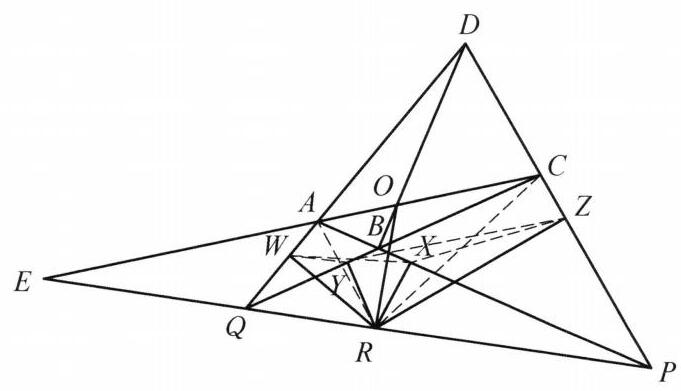

79 例 4：四点共圆判定与托勒密定理应用
79.1 题目
设四边形 {ABCD} 为凸四边形, {AC} 与 {BD},{AB} 与 {CD},{AD} 与 {BC} 分别交于点 O, P, Q ,点 O 在 {PQ} 上的投影为 R . 证明: 点 R 在四边形 {ABCD} 四边上的投影共圆.
79.2 参考解答
如图 5-8,设点 R 在四边形 {ABCD} 四边上的投影分别为 X, Y, Z , W ,则 X, Y, Z, W 四点共圆 \Leftrightarrow \angle {XWY} = \angle {XZY} . 而 \angle {XWY} = \angle {XWR} - \; \angle {YWR} . 注意到 A, W, R, X;Q, W, Y, R 分别四点共圆,于是 \angle {XWR} = \; \angle {XAR},\angle {YWR} = \angle {YQR} . 从而 \angle {XWY} = \angle {XWR} - \angle {YWR} = \angle {XAR} - \angle {YQR} .

图 5-8
同理可得 \angle {XZY} = \angle {YCR} - \angle {XPR} .
所以
\angle {XWY} = \angle {XZY} \Leftrightarrow \angle {XAR} + \angle {XPR} = \angle {YCR} + \angle {YQR}
\Leftrightarrow \angle {ARQ} = \angle {CRP}\text{ . }
下面证明: \angle {ARQ} = \angle {CRP} .
延长 {CA} 与 {PQ} 交于点 E . 对 \triangle {DAC} 和直线 {PQE},\triangle {ACP} 和直线 {BOD} , \triangle {DAP} 和直线 {QBC} 分别用梅涅劳斯定理得
\frac{QA}{DQ} \cdot \frac{PD}{CP} \cdot \frac{EC}{AE} = 1,
\frac{AO}{OC} \cdot \frac{CD}{DP} \cdot \frac{PB}{BA} = 1,
\frac{DQ}{QA} \cdot \frac{AB}{BP} \cdot \frac{PC}{CD} = 1
将上述三式相乘,得 \frac{AE}{EC} = \frac{AO}{OC} ,即 C, O, A, E 成调和点列,又 \angle {ORE} = {90}^{ \circ } , 所以 \angle {ARO} = \angle {CRO} ,故 \angle {ARQ} = \angle {CRP} . 原问题得证.
79.3 解题思路与分析
这份证明之所以让人觉得“神来之笔、摸不着头脑”，是因为教材作者在成文时拆掉了倒推的脚手架，并且为了规避超纲概念，把一个非常经典的射影几何定理硬生生拆成了三次梅涅劳斯定理。
如果我们把作者隐藏在草稿纸背后的真实思维还原出来，这道题其实是由两个极其标准化的几何模块拼接而成的。
79.4 一、 前半段揭秘：看似诡异的导角是怎么“倒推”出来的？
前半段的目标是证明垂足四边形 XYZW 四点共圆。面对这类“一点 R 向四条直线作垂线”的垂足圆（Pedal Circle）问题，几何中只有一套标准动作：利用共斜边的直角三角形四点共圆，把垂足之间的夹角还原回点 R 与原图形交点的连线夹角。
但这里有三个让人困惑的细节，我们逐一拆解：
79.4.1 1. 为什么偏偏选了 \angle XWY = \angle XZY 来导角？
四边形的四条边两两相交，一共有 6 个交点：原四边形的四个顶点 A, B, C, D，以及对边延长线的交点 P, Q。 * 题目的核心已知条件是“O 在 PQ 上的投影为 R”，这意味着 P, Q 是必须被用上的核心点。 * 观察哪两个垂足和 Q 绑在一起：W \in AD, Y \in BC，而 AD \cap BC = Q，因此 Q, W, Y, R 四点共圆（以 QR 为直径）。这强烈暗示我们应该把 W 和 Y 连起来，因为弦 WY 对应的圆周角可以直接转化到点 Q 上！ * 同理，X \in AB, Z \in CD，而 AB \cap CD = P，因此 P, X, Z, R 四点共圆（以 PR 为直径），这暗示我们应该把 X 和 Z 绑在一起。 * 既然 WY 和 XZ 是天然的桥梁，要证 X, Y, Z, W 共圆，最自然的切入点就是以 XY 为公共弦，去证圆周角 \angle XWY = \angle XZY。
79.4.2 2. 为什么证明里只出现了顶点 A, C，而顶点 B, D 彻底消失了？
一旦选定了 \angle XWY = \angle XZY 并以点 R 为核心拆角（\angle XWY = \angle XWR - \angle YWR）： * \angle YWR 在圆 (Q,W,Y,R) 中，顺理成章转化为 \angle YQR（用上了点 Q）； * \angle XWR 涉及垂足 X（在边 AB 上）和垂足 W（在边 AD 上），这两条边的交点恰好是 A！所以在以 AR 为直径的圆 (A,W,R,X) 中，\angle XWR 自然就转化成了 \angle XAR。 * 同理，右侧的 \angle XZY = \angle YZR - \angle XZR 自动激活了交点 C（BC \cap CD）和交点 P（AB \cap CD）。
【思维盲区点破】：并不是 B, D 不能用！这题对两条对角线 AC 和 BD 是完全对称的。如果你一开始选择证 \angle WXY = \angle WZY（以 WY 为公共弦），那么导角就会自动激活顶点 B, D, P, Q，最后归结为证明 \angle BRQ = \angle DRP，同样能证出来！作者只是在对称的两组顶点 (A,C) 和 (B,D) 中任选了 (A,C) 一组而已。
79.4.3 3. 从 \angle XAR + \angle XPR = \angle YCR + \angle YQR 是怎么跳到 \angle ARQ = \angle CRP 的？
书上这一步跳得非常快，而且故意保留了字母 X, Y，掩盖了极其简单的几何本质： * 注意到点 X 本来就在直线 AP（即边 AB）上，所以 \angle XAR 就是 \angle PAR，\angle XPR 就是 \angle APR！ * 观察 \triangle APR：\angle PAR + \angle APR 是它的两个内角之和。由于 Q, R, P 三点共线，根据三角形外角定理，\triangle APR 在顶点 R 处的外角正是 \angle ARQ！因此直接有： \angle XAR + \angle XPR = \angle PAR + \angle APR = \angle ARQ * 完全同理，因为 C, Y, Q 共线（边 BC），在 \triangle CQR 中利用外角定理，直接有： \angle YCR + \angle YQR = \angle QCR + \angle CQR = \angle CRP
看穿了这层窗户纸，前半段其实就是：把垂足四点共圆倒推还原，发现只需证明 \angle ARQ = \angle CRP。
79.5 二、 后半段揭秘：“三个梅氏定理相乘”背后的真正剧本
证明推到 \angle ARQ = \angle CRP（由于 OR \perp PQ，这等价于证明 RO 平分 \angle ARC）时，教材突然拉出三个三角形连用三次梅涅劳斯定理，然后相乘消项。这绝对不是作者在草稿纸上盲目试出来的，而是射影几何中两个经典定理的“初等伪装”：
79.5.1 1. 真正的幕后主角：完全四边形的调和性质 + 直角引理
在熟悉高等几何或竞赛几何的人眼中，看到题目给出的构型（四边形对边交于 P, Q，对角线交于 O，延长 AC 交 PQ 于 E），脑海中会立刻浮现两个现成的定理：
- 完全四边形的调和点列定理：在完全四边形 ABCDPQ 中，对角线 AC 被另一条对角线交点 O 以及对边交点连线 PQ 的交点 E 调和分割，即 C, O, A, E 成调和点列（\frac{AE}{EC} = \frac{AO}{OC}）。
- 调和线束的直角引理：若直线上四点满足 (C, A; O, E) = -1，且直线外一点 R 满足 \angle ORE = 90^\circ，则 RO 和 RE 必分别是 \angle ARC 的内角平分线和外角平分线（即 \angle ARO = \angle CRO，从而 \angle ARQ = \angle CRP）！
也就是说，在作者的脑海里，从已知条件到 \angle ARQ = \angle CRP 其实是一步到位的秒杀！
79.5.2 2. 为什么要写那三个梅涅劳斯定理？
因为这本教材在当前章节不便直接引用“完全四边形必出调和点列”这个结论作为已知定理，作者必须现场给 \frac{AE}{EC} = \frac{AO}{OC} 补一个初等证明。
那么，怎么用梅涅劳斯定理硬证 \frac{AE}{EC} = \frac{AO}{OC}？这也是一个高度套路化的消元操作： 1. 第一步（锁定目标项 \frac{AE}{EC}）：点 A, C, E 在一条直线上，把 AC 当作 \triangle DAC 的一条边，用割线 PQE 去截 \triangle DAC，列出第一个梅氏定理，抓出 \frac{EC}{AE}。 2. 第二步（锁定目标项 \frac{AO}{OC}）：点 A, O, C 在一条直线上，把 AC 当作 \triangle ACP 的一条边，用割线 BOD 去截 \triangle ACP，列出第二个梅氏定理，抓出 \frac{AO}{OC}。 3. 第三步（专门清理残余项）：把前两个式子相乘后，除了我们要的 \frac{EC}{AE} 和 \frac{AO}{OC}，还剩下一堆“垃圾项”：\frac{QA}{DQ}、\frac{PB}{BA}、\frac{CD}{DP}。观察分母和分子上的点：D, Q, A 共线，A, B, P 共线，P, C, D 共线——这三条线恰好围成了外框大三角形 \triangle DAP，而多出来的三个分点 Q, B, C 恰好共线！于是对 \triangle DAP 和割线 QBC 列出第三个梅氏定理，把所有多余的线段比一次性约得干干净净。
79.6 三、 总结：还原整道题的真实思维链条
如果把作者隐藏的思考过程铺平，整道题采用的是非常典型的“两头凑（双向奔赴）”策略：
- 由因导果（正向直觉）： 看到“凸四边形对边交于 P, Q，对角线交于 O” \xrightarrow{\text{完全四边形基本性质}} 延长 CA 交 PQ 于 E，必有调和点列 (C, A; O, E) = -1 \xrightarrow{\text{结合条件 } OR \perp PQ} 触发调和点列直角引理，立刻得知 RO 平分 \angle ARC（即 \angle ARQ = \angle CRP）。（同理可知 RO 也平分 \angle BRD）。
- 执果索因（逆向拆解）： 要证四边垂足 X, Y, Z, W 共圆 \xrightarrow{\text{以 } XY \text{ 为弦}} 需证 \angle XWY = \angle XZY \xrightarrow{\text{利用 } RA, RQ, RC, RP \text{ 四圆消去垂足}} 转化为 \angle XAR + \angle XPR = \angle YCR + \angle YQR \xrightarrow{\triangle APR \text{ 与 } \triangle CQR \text{ 的外角定理}} 发现只需证 \angle ARQ = \angle CRP。
- 完美合龙： 正向推出的核心性质与逆向化简的最终需求在 \angle ARQ = \angle CRP 处精准会师，最后把逆向过程倒过来写、把完全四边形的调和性质拆成三个梅氏定理写进正文，就成了书上那段看似天马行空的证明。
79.7 分步证明
79.7.1 步骤 0：✦ 已知条件与完全四边形构形
给定凸四边形 ABCD。对角线 AC 与 BD 相交于点 O； 对边 AB 与 CD 延长线交于 P，AD 与 BC 延长线交于 Q； 点 O 在直线 PQ 上的投影为 R (OR \perp PQ)； 点 R 在四边形四边上的投影分别为 X, Y, Z, W。 目标：证明 X, Y, Z, W 四点共圆。
79.7.2 步骤 1：① 垂足共圆导出 ∠XWY = ∠XAR - ∠YQR
在四边形 AWRX 中，\angle AXR = \angle AWR = 90^\circ，对角互补，故 A, W, R, X 共圆于以 AR 为直径的圆； 同弦圆周角相等：\angle XWR = \angle XAR； 在四边形 QWRY 中，\angle QWR = \angle QYR = 90^\circ，故 Q, W, Y, R 共圆于以 QR 为直径的圆； 同弦圆周角相等：\angle YWR = \angle YQR；
\angle XWY = \angle XWR - \angle YWR = \angle XAR - \angle YQR
79.7.3 步骤 2：② 对侧同理导角 ∠XZY = ∠YCR - ∠XPR
同理，\angle PXR = \angle PZR = 90^\circ \implies P, X, R, Z 四点共圆于以 PR 为直径的圆； \angle CYR = \angle CZR = 90^\circ \implies C, Y, R, Z 四点共圆于以 CR 为直径的圆； 同弦圆周角相等得：\angle XZR = \angle XPR，\angle YZR = \angle YCR；
\angle XZY = \angle YZR - \angle XZR = \angle YCR - \angle XPR
79.7.4 步骤 3：③ 四点共圆充要条件等价转化
X, Y, Z, W 四点共圆 \iff \angle XWY = \angle XZY； 代入前两步角度差式子并移项整理： \angle XAR + \angle XPR = \angle YCR + \angle YQR； 由 \triangle PAR 与 \triangle QCR 的内角与外角关系消去边角：
\angle XWY = \angle XZY \iff \angle ARQ = \angle CRP
79.7.5 步骤 4：④ 延长 CA 交 PQ 于 E，运用三组梅涅劳斯定理
延长对角线 CA 交直线 PQ 于点 E： 对 \triangle DAC 与截线 PQE 用梅涅劳斯定理：\frac{QA}{DQ} \cdot \frac{PD}{CP} \cdot \frac{EC}{AE} = 1； 对 \triangle ACP 与截线 BOD 用梅涅劳斯定理：\frac{AO}{OC} \cdot \frac{CD}{DP} \cdot \frac{PB}{BA} = 1； 对 \triangle DAP 与截线 QBC 用梅涅劳斯定理：\frac{DQ}{QA} \cdot \frac{AB}{BP} \cdot \frac{PC}{CD} = 1。
79.7.6 步骤 5：⑤ 三式相乘导出调和点列 (C, A; O, E) = -1
将三组梅涅劳斯定理三式两边分别相乘： 比值中 \frac{QA}{DQ} \cdot \frac{DQ}{QA} = 1、\frac{PD}{CP} \cdot \frac{PC}{CD} \cdot \frac{CD}{DP} = 1、\frac{PB}{BA} \cdot \frac{AB}{BP} = 1 完全消去！ 化简得到核心调和比值：
\frac{AE}{EC} = \frac{AO}{OC} \iff (C, A; O, E) = -1
即点列 C, O, A, E 严格构成一条调和点列（O, E 调和分割线段 CA）！
79.7.7 步骤 6：⑥ 调和线束与直角导出角平分线 ⇒ 命题得证
由点列 C, O, A, E 为调和点列，连线束 R(C, A; O, E) 为调和线束； 已知 OR \perp PQ，且 E 落在 PQ 上，故 \angle ORE = 90^\circ； 两共轭线互相垂直 \implies RO 平分 \angle ARC，即 \angle ARO = \angle CRO； 由 \angle ORQ = \angle ORP = 90^\circ 对称相减立得：\angle ARQ = \angle CRP； 由步骤 3 逆推得 \angle XWY = \angle XZY \implies X, Y, Z, W 四点共圆！ [Q.E.D.]